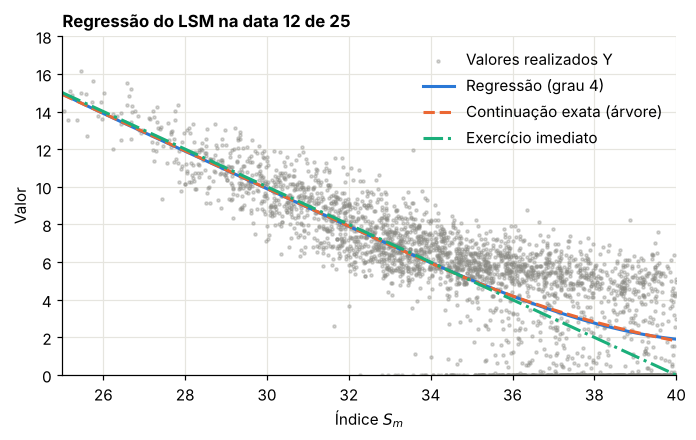
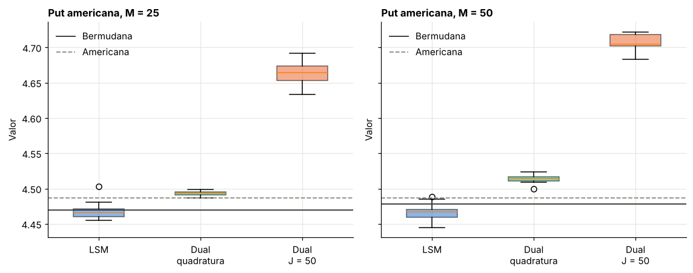
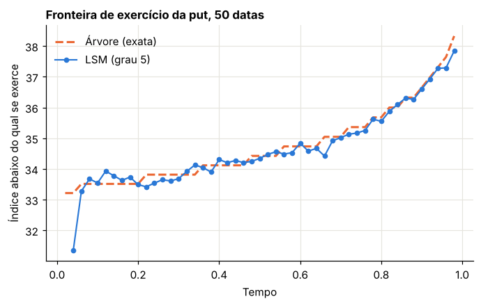

Módulo 9 — Opções americanas por simulação: LSM e dual#
Curso: Derivativos com Python, a partir de Derivatives Analytics with Python (Y. Hilpisch, Wiley, 2015). Este módulo cobre: capítulo 7 do livro.
O que você vai conseguir fazer ao final#
Formular o valor de uma americana como problema de parada ótima e como programação dinâmica.
Explicar por que a simulação, que anda para a frente, tem dificuldade com um problema que anda para trás.
Entender o algoritmo de Longstaff-Schwartz como uma projeção, e implementá-lo.
Distinguir os vieses para cima e para baixo do LSM, e evitá-los.
Deduzir a formulação dual e obter um limite superior.
Construir um intervalo de confiança para o valor americano com os dois limites.
Comparar os resultados com a referência certa: o valor bermudano.
Onde estamos#
No Módulo 6, a árvore resolveu a put americana com um único max por nó. Mas árvores ficam inviáveis com várias variáveis de estado, como no modelo geral que vamos usar (índice, variância e juros). A simulação não sofre com a dimensão, mas anda no sentido errado. Este módulo resolve esse impasse.
0. Preparação#
from time import perf_counter
import numpy as np
import pandas as pd
import matplotlib.pyplot as plt
from numpy.polynomial import polynomial as P
from scipy.stats import norm
from IPython.display import display
AZUL, LARANJA, VERDE, CINZA = "#2a78d6", "#eb6834", "#1baf7a", "#8a8a84"
plt.rcParams.update({
"figure.figsize": (7.2, 4.0), "figure.dpi": 110,
"axes.spines.top": False, "axes.spines.right": False,
"axes.grid": True, "grid.color": "#e6e5df", "grid.linewidth": 0.8,
"axes.axisbelow": True, "axes.titlesize": 11, "axes.titleweight": "bold",
"axes.titlelocation": "left", "lines.linewidth": 2.0, "legend.frameon": False,
"font.size": 10,
})
def f3(x):
"""Formata com três casas decimais no padrão brasileiro."""
return f"{x:,.3f}".replace(",", "§").replace(".", ",").replace("§", ".")
def tabela(df):
"""Exibe um DataFrame com os números reais em três casas decimais."""
def fmt(v):
if isinstance(v, (float, np.floating)):
return "n/d" if np.isnan(v) else f3(v)
return v
display(df.map(fmt))
_checks = {"n": 0}
def ok(condicao, mensagem):
"""Verificação do laboratório: interrompe o notebook se a conta não fechar."""
assert bool(condicao), f"FALHOU: {mensagem}"
_checks["n"] += 1
print(f"OK — {mensagem}")
# Os dois exemplos do livro
PUT = dict(S0=36.0, K=40.0, T=1.0, r=0.06, sig=0.20)
CONDOR = dict(S0=100.0, K=100.0, T=1.0, r=0.05, sig=0.50)
pay_put = lambda s: np.maximum(40.0 - s, 0.0)
pay_condor = lambda s: np.minimum(40.0, np.maximum(90.0 - s, 0.0) + np.maximum(s - 110.0, 0.0))
print("Ambiente pronto.")
Ambiente pronto.
1. O problema#
Livro: §7.3.1
1.1 Parada ótima#
O titular de uma americana escolhe quando exercer. Essa escolha só pode usar a informação disponível até o momento: é um tempo de parada, no sentido do Módulo 3. O valor é o melhor resultado possível entre todos os tempos de parada:
1.2 Programação dinâmica#
Para calcular, discretizamos o tempo em \(M\) datas de exercício, \(t_m = m\Delta t\). Na última data, \(V_M = h(S_M)\). Nas anteriores, comparamos o exercício com o valor de continuação:
O processo \(V_m\) é a envoltória de Snell: o menor supermartingale que fica acima do payoff descontado.
1.3 Americana ou bermudana?#
Com \(M\) datas, o algoritmo precifica uma bermudana de \(M\) datas, e não a americana com exercício contínuo. A diferença é sistemática e sempre para baixo. No Módulo 6 vimos que, para a put de Longstaff-Schwartz, a diferença com 50 datas é de cerca de 0,009.
Isso tem uma consequência para a leitura dos resultados: um algoritmo com \(M\) datas deve ser comparado com a bermudana de \(M\) datas. Comparar com a americana mistura dois erros diferentes.
Laboratório 1.1 — As referências corretas#
Calculamos por árvore (Módulo 6) o valor bermudano para as datas usadas no livro e o valor americano.
def arvore_bermudana(pay, S0, T, r, sig, datas, fator=200, guardar=False):
"""Árvore CRR com 'fator' passos entre datas de exercício. Opcionalmente guarda V nas datas."""
N = datas * fator
dt = T / N
u = np.exp(sig * np.sqrt(dt))
d = 1 / u
q = (np.exp(r * dt) - d) / (u - d)
desc = np.exp(-r * dt)
j = np.arange(N + 1)
ST = S0 * u**j * d ** (N - j)
V = pay(ST)
tab = {datas: (np.log(ST), V.copy())} if guardar else None
for t in range(N - 1, -1, -1):
V = desc * (q * V[1:] + (1 - q) * V[:-1])
if t % fator == 0 and t > 0:
j = np.arange(t + 1)
St = S0 * u**j * d ** (t - j)
V = np.maximum(V, pay(St))
if guardar:
tab[t // fator] = (np.log(St), V.copy())
return (float(V[0]), tab) if guardar else float(V[0])
p_ = dict(S0=PUT["S0"], T=PUT["T"], r=PUT["r"], sig=PUT["sig"])
c_ = dict(S0=CONDOR["S0"], T=CONDOR["T"], r=CONDOR["r"], sig=CONDOR["sig"])
ref = {}
linhas = []
for M in [25, 50, 75]:
ref[("put", M)] = arvore_bermudana(pay_put, datas=M, **p_)
ref[("condor", M)] = arvore_bermudana(pay_condor, datas=M, **c_)
linhas.append({"Datas de exercício M": str(M), "Put: bermudana": ref[("put", M)], "Condor: bermudana": ref[("condor", M)]})
am_put = arvore_bermudana(pay_put, datas=15000, fator=1, **p_)
am_con = arvore_bermudana(pay_condor, datas=15000, fator=1, **c_)
linhas.append({"Datas de exercício M": "Contínuo (americana)", "Put: bermudana": am_put, "Condor: bermudana": am_con})
linhas.append({"Datas de exercício M": "Livro: árvore de 500 passos", "Put: bermudana": 4.486, "Condor: bermudana": 26.97705})
refs = pd.DataFrame(linhas)
tabela(refs)
ok(abs(arvore_bermudana(pay_put, datas=500, fator=1, **p_) - 4.486) < 1e-3, "a árvore de 500 passos reproduz a referência do livro para a put")
ok(abs(arvore_bermudana(pay_condor, datas=500, fator=1, **c_) - 26.97705) < 1e-4, "e para o condor")
ok(am_con - ref[("condor", 25)] > 0.9, "no condor, a diferença entre americana e bermudana de 25 datas passa de 0,9")
| Datas de exercício M | Put: bermudana | Condor: bermudana | |
|---|---|---|---|
| 0 | 25 | 4,469 | 26,015 |
| 1 | 50 | 4,478 | 26,332 |
| 2 | 75 | 4,481 | 26,469 |
| 3 | Contínuo (americana) | 4,487 | 27,008 |
| 4 | Livro: árvore de 500 passos | 4,486 | 26,977 |
OK — a árvore de 500 passos reproduz a referência do livro para a put
OK — e para o condor
OK — no condor, a diferença entre americana e bermudana de 25 datas passa de 0,9
Guarde esta tabela. O livro compara os resultados de simulação com 4,486 e 26,977, que são valores americanos. Veremos que boa parte do que ele chama de “diferença” do LSM não é erro do algoritmo, e sim a diferença entre americana e bermudana.
2. Por que simular é difícil#
Livro: §7.3.2
A simulação gera trajetórias para a frente. O valor de continuação é uma esperança condicional: para cada nó de cada trajetória, precisaríamos de outra simulação a partir dali. Com \(I\) trajetórias, isso dá \(I^2\) trajetórias por data, um custo inviável.
A tentação: usar o futuro realizado#
Cada trajetória tem, de fato, um valor futuro realizado \(Y_{m,i}\). Por que não decidir com ele?
Porque isso é olhar o futuro: decidir exercer sabendo que o índice vai subir. A decisão deixa de ser um tempo de parada. O valor obtido é sistematicamente alto.
Laboratório 2.1 — O preço da clarividência#
def simular(S0, r, sig, T, M, I, rng, momentos=True, antiteticas=False):
"""Trajetórias do GBM. Linhas são datas, colunas são trajetórias."""
dt = T / M
if antiteticas:
z = rng.standard_normal((M, I // 2))
Z = np.concatenate([z, -z], axis=1)
else:
Z = rng.standard_normal((M, I))
if momentos:
Z = (Z - Z.mean(axis=1, keepdims=True)) / Z.std(axis=1, keepdims=True)
inc = (r - 0.5 * sig**2) * dt + sig * np.sqrt(dt) * Z
return S0 * np.exp(np.vstack([np.zeros(I), np.cumsum(inc, axis=0)]))
def clarividente(S, pay, r, T):
M = S.shape[0] - 1
desc = np.exp(-r * T / M)
V = pay(S[-1])
for m in range(M - 1, 0, -1):
V = np.maximum(pay(S[m]), desc * V)
return float(desc * V.mean())
rng = np.random.default_rng(901)
S = simular(PUT["S0"], PUT["r"], PUT["sig"], PUT["T"], 25, 100_000, rng)
v_clar = clarividente(S, pay_put, PUT["r"], PUT["T"])
tabela(pd.DataFrame([{"Estimador": "Decidir com o futuro realizado", "Valor": v_clar}, {"Estimador": "Bermudana de 25 datas (árvore)", "Valor": ref[("put", 25)]}]))
ok(v_clar > ref[("put", 25)] + 0.5, "usar o futuro realizado superestima muito o valor")
| Estimador | Valor | |
|---|---|---|
| 0 | Decidir com o futuro realizado | 7,444 |
| 1 | Bermudana de 25 datas (árvore) | 4,469 |
OK — usar o futuro realizado superestima muito o valor
3. Longstaff-Schwartz: a esperança condicional como regressão#
Livro: §7.3.2, Algoritmo 1
3.1 A ideia#
Uma esperança condicional é a melhor previsão de \(Y\) a partir de \(S_m\), no sentido dos mínimos quadrados:
Não podemos minimizar sobre todas as funções, mas podemos restringir a busca a combinações de \(D\) funções-base:
É uma regressão comum. As trajetórias vizinhas fazem o papel da simulação aninhada. Em linguagem geométrica, é a projeção ortogonal de \(Y\) sobre o espaço gerado pelas funções-base.
3.2 O algoritmo, passo a passo#
Simule \(I\) trajetórias.
Em \(T\): \(V_{M,i} = h(S_{M,i})\).
Para \(m = M-1, \dots, 1\):
\(Y_{m,i} = e^{-r\Delta t}V_{m+1,i}\) (o realizado);
regrida \(Y\) nas funções-base, apenas nas trajetórias dentro do dinheiro;
se \(h(S_{m,i}) > \hat C_m(S_{m,i})\), exerça: \(V_{m,i} = h(S_{m,i})\); senão, \(V_{m,i} = Y_{m,i}\).
\(\hat V_0 = e^{-r\Delta t}\frac1I\sum_iV_{1,i}\).
O detalhe que faz o método funcionar: a regressão só serve para decidir. O valor guardado é o realizado \(Y\), nunca o estimado \(\hat C\). Assim o erro da regressão só afeta a qualidade da decisão, e não se acumula.
Por que só as trajetórias dentro do dinheiro? Fora do dinheiro, não há decisão a tomar. Concentrar a regressão onde importa dá um ajuste melhor exatamente na região da fronteira.
Funções-base. Usamos monômios em \(x = S/K\). Dividir por \(K\) deixa os números perto de 1 e evita problemas numéricos.
Laboratório 3.1 — Uma regressão vista de perto#
Na data de meio prazo, colocamos em um gráfico os pares \((S_m, Y_m)\), a curva ajustada e o valor de continuação exato, obtido pela árvore.
def base(s, K, grau):
return P.polyvander(s / K, grau)
M, grau = 25, 4
rng = np.random.default_rng(902)
S = simular(PUT["S0"], PUT["r"], PUT["sig"], PUT["T"], M, 20_000, rng)
desc = np.exp(-PUT["r"] * PUT["T"] / M)
V = pay_put(S[-1])
m_alvo = 12
for m in range(M - 1, 0, -1):
Y = desc * V
h = pay_put(S[m])
itm = h > 0
coef = np.linalg.lstsq(base(S[m][itm], 40.0, grau), Y[itm], rcond=None)[0]
C = P.polyval(S[m] / 40.0, coef)
if m == m_alvo:
S_alvo, Y_alvo, coef_alvo, itm_alvo = S[m].copy(), Y.copy(), coef.copy(), itm.copy()
V = np.where(itm & (h > C), h, Y)
# Valor de continuação exato na data m_alvo, pela árvore
_, tab = arvore_bermudana(pay_put, datas=M, guardar=True, **p_)
fator, N = 200, M * 200
dt_f = PUT["T"] / N
u_f = np.exp(PUT["sig"] * np.sqrt(dt_f))
d_f = 1 / u_f
q_f = (np.exp(PUT["r"] * dt_f) - d_f) / (u_f - d_f)
_, Vn = tab[m_alvo + 1]
Vc = Vn.copy()
for _ in range(fator):
Vc = np.exp(-PUT["r"] * dt_f) * (q_f * Vc[1:] + (1 - q_f) * Vc[:-1])
t_no = (m_alvo + 1) * fator - fator
j = np.arange(t_no + 1)
S_no = PUT["S0"] * u_f**j * d_f ** (t_no - j)
grade = np.linspace(25, 40, 200)
fig, ax = plt.subplots()
idx = np.where(itm_alvo)[0][:3000]
ax.scatter(S_alvo[idx], Y_alvo[idx], s=4, color=CINZA, alpha=0.35, label="Valores realizados Y")
ax.plot(grade, P.polyval(grade / 40.0, coef_alvo), color=AZUL, label="Regressão (grau 4)")
ax.plot(grade, np.interp(grade, S_no, Vc), color=LARANJA, ls="--", label="Continuação exata (árvore)")
ax.plot(grade, pay_put(grade), color=VERDE, ls="-.", label="Exercício imediato")
ax.set_xlim(25, 40)
ax.set_ylim(0, 18)
ax.set_title(f"Regressão do LSM na data {m_alvo} de {M}")
ax.set_xlabel("Índice $S_m$")
ax.set_ylabel("Valor")
ax.legend()
plt.show()
erro_reg = np.abs(P.polyval(grade / 40.0, coef_alvo) - np.interp(grade, S_no, Vc))
print("Maior erro da regressão na faixa 28 a 40:", f3(float(erro_reg[grade >= 28].max())))
ok(erro_reg[grade >= 28].max() < 0.1, "a regressão aproxima bem o valor de continuação exato")

Maior erro da regressão na faixa 28 a 40: 0,090
OK — a regressão aproxima bem o valor de continuação exato
Leitura. Os pontos estão muito espalhados, porque cada \(Y\) é o resultado de uma única trajetória. Mesmo assim, a média condicional, que é o que a regressão recupera, coincide com a curva exata. A decisão de exercer está no cruzamento das curvas azul e verde.
3.3 Dois vieses de sinais opostos#
Viés para baixo. A regra de exercício estimada é, no máximo, tão boa quanto a ótima. Qualquer regra de exercício avaliada em trajetórias novas é um tempo de parada legítimo, e seu valor esperado não pode superar o ótimo. É o limite inferior.
Viés para cima (dentro da amostra). Se a mesma amostra serve para ajustar a regressão e para avaliar, a regra se adapta ao ruído daquela amostra, uma pequena dose da clarividência da Seção 2. Com poucas trajetórias e muitas funções-base, o resultado pode até superar o valor verdadeiro.
A solução, como o livro sugere, é separar: \(I_1\) trajetórias para estimar os coeficientes e \(I_2\) trajetórias novas para avaliar.
def lsm_regressoes(S, pay, K, r, T, grau, so_itm=True):
"""Passo para trás do LSM. Devolve os coeficientes (regra de exercício), os coeficientes em todas as trajetórias (função valor) e o valor dentro da amostra."""
M = S.shape[0] - 1
desc = np.exp(-r * T / M)
V = pay(S[-1])
regra, fval = [None] * (M + 1), [None] * (M + 1)
for m in range(M - 1, 0, -1):
Y = desc * V
h = pay(S[m])
sel = h > 0 if so_itm else np.ones_like(h, bool)
x = S[m] / K
faixa = (x.min(), x.max())
c = np.linalg.lstsq(P.polyvander(x[sel], grau), Y[sel], rcond=None)[0]
c_tudo = np.linalg.lstsq(P.polyvander(x, grau), Y, rcond=None)[0]
regra[m], fval[m] = (c, faixa, so_itm), (c_tudo, faixa)
C = P.polyval(x, c)
V = np.where((h > 0) & (h > C) if so_itm else (h > C), h, Y)
return regra, fval, float(desc * V.mean())
def continuacao(regra, m, s, K):
c, faixa, _ = regra[m]
return P.polyval(s / K, c)
def lsm_fora_amostra(S, pay, K, r, T, regra):
"""Aplica a regra de exercício a trajetórias novas: limite inferior."""
M, I = S.shape[0] - 1, S.shape[1]
dt = T / M
valor = np.zeros(I)
vivo = np.ones(I, bool)
for m in range(1, M + 1):
h = pay(S[m])
if m < M:
exerce = vivo & (h > 0) & (h > continuacao(regra, m, S[m], K))
else:
exerce = vivo & (h > 0)
valor[exerce] = np.exp(-r * m * dt) * h[exerce]
vivo &= ~exerce
return float(valor.mean()), float(valor.std(ddof=1) / np.sqrt(I))
rng = np.random.default_rng(903)
linhas = []
for I1, grau in [(200, 8), (1_000, 8), (16_384, 8), (100_000, 4)]:
dentro, fora = [], []
for _ in range(20):
S1 = simular(PUT["S0"], PUT["r"], PUT["sig"], PUT["T"], 25, I1, rng)
regra, _, v_in = lsm_regressoes(S1, pay_put, 40.0, PUT["r"], PUT["T"], grau)
S2 = simular(PUT["S0"], PUT["r"], PUT["sig"], PUT["T"], 25, 50_000, rng)
dentro.append(v_in)
fora.append(lsm_fora_amostra(S2, pay_put, 40.0, PUT["r"], PUT["T"], regra)[0])
linhas.append({"Trajetórias de regressão I1": str(I1), "Grau": grau, "Dentro da amostra: média": float(np.mean(dentro)), "Fora da amostra: média": float(np.mean(fora)), "Referência bermudana": ref[("put", 25)]})
vies = pd.DataFrame(linhas)
tabela(vies)
ok(vies["Dentro da amostra: média"].iloc[0] > vies["Fora da amostra: média"].iloc[0] + 0.03, "com poucas trajetórias, a estimativa dentro da amostra fica acima da de fora")
ok((vies["Fora da amostra: média"] < ref[("put", 25)] + 0.01).all(), "fora da amostra, a estimativa não ultrapassa a referência (é um limite inferior)")
| Trajetórias de regressão I1 | Grau | Dentro da amostra: média | Fora da amostra: média | Referência bermudana | |
|---|---|---|---|---|---|
| 0 | 200 | 8 | 4,854 | 4,259 | 4,469 |
| 1 | 1000 | 8 | 4,537 | 4,426 | 4,469 |
| 2 | 16384 | 8 | 4,470 | 4,465 | 4,469 |
| 3 | 100000 | 4 | 4,469 | 4,466 | 4,469 |
OK — com poucas trajetórias, a estimativa dentro da amostra fica acima da de fora
OK — fora da amostra, a estimativa não ultrapassa a referência (é um limite inferior)
Laboratório 3.2 — Funções-base e regressão só dentro do dinheiro#
Usamos \(I_1 = 16.384\) trajetórias para estimar a regra e \(I_2 = 100.000\) para avaliá-la.
rng = np.random.default_rng(904)
S1 = simular(PUT["S0"], PUT["r"], PUT["sig"], PUT["T"], 25, 16_384, rng)
S2 = simular(PUT["S0"], PUT["r"], PUT["sig"], PUT["T"], 25, 100_000, rng)
linhas = []
for so_itm in [True, False]:
for grau in [1, 2, 3, 5, 8]:
regra, _, _ = lsm_regressoes(S1, pay_put, 40.0, PUT["r"], PUT["T"], grau, so_itm)
v, ep = lsm_fora_amostra(S2, pay_put, 40.0, PUT["r"], PUT["T"], regra)
linhas.append({"Regressão": "Só dentro do dinheiro" if so_itm else "Todas as trajetórias", "Grau": grau, "Valor (fora da amostra)": v, "Erro-padrão": ep, "Distância à bermudana": v - ref[("put", 25)]})
bas = pd.DataFrame(linhas)
tabela(bas)
ok(bas.query("Regressão == 'Só dentro do dinheiro' and Grau == 3")["Distância à bermudana"].abs().iloc[0] < 0.02, "com regressão só dentro do dinheiro e grau 3, o LSM fica a menos de 0,02 da bermudana")
ok(bas.query("Grau == 1")["Valor (fora da amostra)"].max() < bas.query("Grau == 3")["Valor (fora da amostra)"].min(), "uma base muito pobre (reta) produz uma regra de exercício pior")
| Regressão | Grau | Valor (fora da amostra) | Erro-padrão | Distância à bermudana | |
|---|---|---|---|---|---|
| 0 | Só dentro do dinheiro | 1 | 4,417 | 0,010 | -0,052 |
| 1 | Só dentro do dinheiro | 2 | 4,460 | 0,010 | -0,009 |
| 2 | Só dentro do dinheiro | 3 | 4,464 | 0,009 | -0,005 |
| 3 | Só dentro do dinheiro | 5 | 4,467 | 0,009 | -0,003 |
| 4 | Só dentro do dinheiro | 8 | 4,465 | 0,009 | -0,004 |
| 5 | Todas as trajetórias | 1 | 4,439 | 0,010 | -0,030 |
| 6 | Todas as trajetórias | 2 | 4,458 | 0,009 | -0,011 |
| 7 | Todas as trajetórias | 3 | 4,462 | 0,009 | -0,007 |
| 8 | Todas as trajetórias | 5 | 4,466 | 0,009 | -0,003 |
| 9 | Todas as trajetórias | 8 | 4,466 | 0,009 | -0,003 |
OK — com regressão só dentro do dinheiro e grau 3, o LSM fica a menos de 0,02 da bermudana
OK — uma base muito pobre (reta) produz uma regra de exercício pior
4. A formulação dual: um limite superior#
Livro: §7.3.1 e Algoritmo 2
O LSM dá um limite inferior, mas não diz o quanto está abaixo. Haugh e Kogan (2004) e Rogers (2002) mostraram como obter um limite superior.
4.1 Dedução#
Trabalhe com valores descontados, \(\tilde h_m = e^{-rt_m}h(S_m)\). Seja \(\mathcal{M}\) qualquer martingale com \(\mathcal{M}_0 = 0\).
Passo 1. Para qualquer tempo de parada \(\tau\), o teorema de parada opcional dá \(\mathbb{E}[\mathcal{M}_\tau] = \mathcal{M}_0 = 0\). Logo,
Passo 2. O valor em \(\tau\) não supera o maior valor da trajetória:
Passo 3. O lado direito não depende de \(\tau\). Tomando o supremo à esquerda:
Passo 4: a igualdade. Tome o martingale da decomposição de Doob da envoltória de Snell, \(\tilde V_m = V_0 + \mathcal{M}^*_m - A_m\), com \(A\) crescente. Como \(\tilde V\) fica acima de \(\tilde h\):
O máximo é, portanto, no máximo \(V_0\), e a desigualdade vira igualdade. Mais do que isso: com o martingale ótimo, o estimador tem variância zero. Toda trajetória dá exatamente \(V_0\).
4.2 Como construir o martingale na prática#
Não conhecemos \(\mathcal{M}^*\), mas temos uma aproximação da função valor pelo LSM: \(\hat V_m(s) = \max[h(s), \hat C_m(s)]\). Construímos o martingale pelos seus incrementos:
Subtrair a esperança condicional garante que é um martingale, seja qual for a qualidade de \(\hat V\). Uma \(\hat V\) ruim dá um limite superior folgado, mas válido.
Resta calcular a esperança condicional. O livro faz uma simulação aninhada: \(J\) sucessores de cada ponto. Num modelo de um fator, há uma alternativa sem ruído: a quadratura de Gauss-Hermite. Com \(n\) nós \(x_k\) e pesos \(w_k\) da normal padrão,
Por que isso importa? O ruído da simulação aninhada entra dentro do máximo. Pela desigualdade de Jensen, \(\mathbb{E}[\max(\cdot)]\) cresce com o ruído: o limite superior fica viesado para cima, e tanto mais quanto menor \(J\).
Cuidado com a função valor fora do dinheiro. O limite superior usa \(\hat V\) em todo lugar, inclusive em regiões em que a regressão só dentro do dinheiro não tem dados e um polinômio de grau 8 extrapola de forma descontrolada. Por isso usamos a regressão em todas as trajetórias para \(\hat V\), limitamos \(x\) à faixa observada e truncamos \(\hat C\) em zero.
Laboratório 4.1 — Com a função valor exata, o limite é exato#
Primeiro, um teste de sanidade: usamos como \(\hat V\) o valor exato da árvore.
def dual(S, pay, r, T, sig, Vf, J=None, rng=None, n_gh=40):
"""Limite superior dual. Com J, esperança condicional por simulação aninhada; sem J, por Gauss-Hermite."""
M, I = S.shape[0] - 1, S.shape[1]
dt = T / M
if J is None:
x, w = np.polynomial.hermite_e.hermegauss(n_gh)
w = w / w.sum()
Mt = np.zeros(I)
U = np.full(I, -np.inf)
for m in range(1, M + 1):
d = np.exp(-r * m * dt)
if J is None:
suc = S[m - 1][:, None] * np.exp((r - 0.5 * sig**2) * dt + sig * np.sqrt(dt) * x)
esp = Vf(m, suc.ravel()).reshape(I, -1) @ w
else:
z = rng.standard_normal((I, J))
suc = S[m - 1][:, None] * np.exp((r - 0.5 * sig**2) * dt + sig * np.sqrt(dt) * z)
esp = Vf(m, suc.ravel()).reshape(I, J).mean(axis=1)
Mt = Mt + d * (Vf(m, S[m]) - esp)
U = np.maximum(U, d * pay(S[m]) - Mt)
return float(U.mean()), float(U.std(ddof=1) / np.sqrt(I)), float(U.std(ddof=1))
v_arv, tab25 = arvore_bermudana(pay_put, datas=25, fator=40, guardar=True, **p_)
V_exata = lambda m, s: np.interp(np.log(s), *tab25[m])
rng = np.random.default_rng(905)
S3 = simular(PUT["S0"], PUT["r"], PUT["sig"], PUT["T"], 25, 2_000, rng, momentos=False)
linhas = []
for J in [10, 50, 500, None]:
v, ep, dp = dual(S3, pay_put, PUT["r"], PUT["T"], PUT["sig"], V_exata, J=J, rng=rng)
linhas.append({"Esperança condicional": f"Aninhada, J = {J}" if J else "Gauss-Hermite (40 nós)", "Limite superior": v, "Desvio-padrão por trajetória": dp, "Folga sobre a bermudana": v - v_arv})
ex = pd.DataFrame(linhas)
tabela(ex)
ok(ex["Folga sobre a bermudana"].iloc[0] > ex["Folga sobre a bermudana"].iloc[2] > ex["Folga sobre a bermudana"].iloc[3] - 1e-4, "a folga cai quando a esperança condicional fica mais precisa")
ok(abs(ex["Folga sobre a bermudana"].iloc[-1]) < 0.003 and ex["Desvio-padrão por trajetória"].iloc[-1] < 0.05, "com função valor exata e sem ruído, o limite é exato e quase sem variância")
| Esperança condicional | Limite superior | Desvio-padrão por trajetória | Folga sobre a bermudana | |
|---|---|---|---|---|
| 0 | Aninhada, J = 10 | 5,059 | 0,948 | 0,589 |
| 1 | Aninhada, J = 50 | 4,637 | 0,394 | 0,167 |
| 2 | Aninhada, J = 500 | 4,492 | 0,126 | 0,023 |
| 3 | Gauss-Hermite (40 nós) | 4,469 | 0,005 | -0,000 |
OK — a folga cai quando a esperança condicional fica mais precisa
OK — com função valor exata e sem ruído, o limite é exato e quase sem variância
Leitura. A primeira linha mostra o tamanho do problema: com \(J = 10\), o limite superior fica mais de meio real acima do valor verdadeiro, e isso com a função valor perfeita. A folga vem inteira do ruído aninhado. Com a quadratura, ela desaparece, e o desvio por trajetória vai a quase zero, como o Passo 4 previa.
Laboratório 4.2 — O intervalo completo para a put#
Agora o caso real: função valor estimada pelo LSM.
def funcao_valor(fval, pay, K, M):
def Vf(m, s):
h = pay(s)
if m == M:
return h
c, (a, b) = fval[m]
return np.maximum(h, np.maximum(P.polyval(np.clip(s / K, a, b), c), 0.0))
return Vf
rng = np.random.default_rng(906)
S1 = simular(PUT["S0"], PUT["r"], PUT["sig"], PUT["T"], 25, 16_384, rng)
S2 = simular(PUT["S0"], PUT["r"], PUT["sig"], PUT["T"], 25, 100_000, rng)
S3 = simular(PUT["S0"], PUT["r"], PUT["sig"], PUT["T"], 25, 2_000, rng, momentos=False)
linhas = []
for grau in [3, 5, 8]:
regra, fval, _ = lsm_regressoes(S1, pay_put, 40.0, PUT["r"], PUT["T"], grau)
lo, ep_lo = lsm_fora_amostra(S2, pay_put, 40.0, PUT["r"], PUT["T"], regra)
Vf = funcao_valor(fval, pay_put, 40.0, 25)
up_a, ep_a, _ = dual(S3, pay_put, PUT["r"], PUT["T"], PUT["sig"], Vf, J=50, rng=rng)
up_q, ep_q, _ = dual(S3, pay_put, PUT["r"], PUT["T"], PUT["sig"], Vf)
linhas.append({"Grau": grau, "LSM (inferior)": lo, "Dual aninhado J=50": up_a, "Dual Gauss-Hermite": up_q, "Largura do intervalo (quadratura)": up_q - lo})
du = pd.DataFrame(linhas)
tabela(du)
print("Referência bermudana de 25 datas:", f3(ref[("put", 25)]))
ok((du["LSM (inferior)"] < ref[("put", 25)] + 0.01).all() and (du["Dual Gauss-Hermite"] > ref[("put", 25)] - 0.01).all(), "a bermudana fica entre os dois limites")
ok(du["Largura do intervalo (quadratura)"].iloc[-1] < 0.05, "com grau 8 e quadratura, o intervalo tem largura menor que 0,05")
ok((du["Dual aninhado J=50"] > du["Dual Gauss-Hermite"] + 0.05).all(), "a simulação aninhada com J=50 infla o limite superior")
| Grau | LSM (inferior) | Dual aninhado J=50 | Dual Gauss-Hermite | Largura do intervalo (quadratura) | |
|---|---|---|---|---|---|
| 0 | 3 | 4,475 | 4,713 | 4,568 | 0,093 |
| 1 | 5 | 4,471 | 4,675 | 4,508 | 0,038 |
| 2 | 8 | 4,470 | 4,683 | 4,496 | 0,026 |
Referência bermudana de 25 datas: 4,469
OK — a bermudana fica entre os dois limites
OK — com grau 8 e quadratura, o intervalo tem largura menor que 0,05
OK — a simulação aninhada com J=50 infla o limite superior
5. Reproduzindo a Tabela 7.1, com a referência certa#
O livro roda cada configuração 25 vezes. Fazemos o mesmo para \(M = 25\) e \(M = 50\), com os parâmetros do livro para o dual aninhado (\(I_1 = 16.384\), \(J = 50\)), e acrescentamos o dual por quadratura.
rng = np.random.default_rng(907)
corridas = {}
t0 = perf_counter()
for M in [25, 50]:
res = {"LSM": [], "Dual J=50": [], "Dual quadratura": []}
for _ in range(15):
S1 = simular(PUT["S0"], PUT["r"], PUT["sig"], PUT["T"], M, 16_384, rng)
regra, fval, _ = lsm_regressoes(S1, pay_put, 40.0, PUT["r"], PUT["T"], 8)
S2 = simular(PUT["S0"], PUT["r"], PUT["sig"], PUT["T"], M, 20_000, rng)
res["LSM"].append(lsm_fora_amostra(S2, pay_put, 40.0, PUT["r"], PUT["T"], regra)[0])
S3 = simular(PUT["S0"], PUT["r"], PUT["sig"], PUT["T"], M, 1_000, rng, momentos=False)
Vf = funcao_valor(fval, pay_put, 40.0, M)
res["Dual J=50"].append(dual(S3, pay_put, PUT["r"], PUT["T"], PUT["sig"], Vf, J=50, rng=rng)[0])
res["Dual quadratura"].append(dual(S3, pay_put, PUT["r"], PUT["T"], PUT["sig"], Vf)[0])
corridas[M] = res
print("Tempo total:", f3(perf_counter() - t0), "s")
linhas = []
livro = {25: (4.452, 4.651), 50: (4.470, 4.595)}
for M, res in corridas.items():
linhas.append({"M": M, "LSM: média": float(np.mean(res["LSM"])), "Livro LSM": livro[M][0], "Dual J=50: média": float(np.mean(res["Dual J=50"])), "Livro dual": livro[M][1], "Dual quadratura: média": float(np.mean(res["Dual quadratura"])), "Bermudana": ref[("put", M)], "Americana": am_put})
t71 = pd.DataFrame(linhas)
tabela(t71)
fig, eixos = plt.subplots(1, 2, figsize=(10.5, 4.2), sharey=True)
for ax, M in zip(eixos, [25, 50]):
dados = [corridas[M]["LSM"], corridas[M]["Dual quadratura"], corridas[M]["Dual J=50"]]
caixa = ax.boxplot(dados, tick_labels=["LSM", "Dual\nquadratura", "Dual\nJ = 50"], patch_artist=True, widths=0.5)
for b, cor in zip(caixa["boxes"], [AZUL, VERDE, LARANJA]):
b.set_facecolor(cor)
b.set_alpha(0.55)
ax.axhline(ref[("put", M)], color="#333330", lw=1.2, label="Bermudana")
ax.axhline(am_put, color=CINZA, lw=1.2, ls="--", label="Americana")
ax.set_title(f"Put americana, M = {M}")
ax.set_ylabel("Valor")
ax.legend(loc="upper left")
plt.tight_layout()
plt.show()
for M in [25, 50]:
ok(abs(np.mean(corridas[M]["LSM"]) - ref[("put", M)]) < 0.02, f"M = {M}: o LSM fica a menos de 0,02 da bermudana")
ok(np.mean(corridas[M]["Dual quadratura"]) - ref[("put", M)] < 0.5 * (np.mean(corridas[M]["Dual J=50"]) - ref[("put", M)]), f"M = {M}: a quadratura corta a folga do dual pela metade ou mais")
Tempo total: 6,405 s
| M | LSM: média | Livro LSM | Dual J=50: média | Livro dual | Dual quadratura: média | Bermudana | Americana | |
|---|---|---|---|---|---|---|---|---|
| 0 | 25 | 4,468 | 4,452 | 4,662 | 4,651 | 4,493 | 4,469 | 4,487 |
| 1 | 50 | 4,466 | 4,470 | 4,708 | 4,595 | 4,514 | 4,478 | 4,487 |

OK — M = 25: o LSM fica a menos de 0,02 da bermudana
OK — M = 25: a quadratura corta a folga do dual pela metade ou mais
OK — M = 50: o LSM fica a menos de 0,02 da bermudana
OK — M = 50: a quadratura corta a folga do dual pela metade ou mais
Leitura. Duas correções à leitura do livro:
Parte da “diferença” de −0,034 atribuída ao LSM com \(M = 25\) é a diferença entre americana e bermudana, de cerca de 0,017. Medido contra a referência correta, o LSM erra bem pouco.
A distância do dual, de 0,165, vem principalmente do ruído da simulação aninhada. Com quadratura, o limite superior fica perto do valor verdadeiro.
6. Um payoff difícil: o short condor#
Livro: §7.4.2
O payoff é não convexo, com duas quinas e um platô. Polinômios simples têm dificuldade de aproximá-lo, e o livro conclui que a convergência do LSM é fraca. Como o payoff é positivo quase em todo lugar, regredimos em todas as trajetórias.
Laboratório 6.1 — O condor com a referência certa#
rng = np.random.default_rng(908)
linhas = []
for M in [25, 50]:
S1 = simular(CONDOR["S0"], CONDOR["r"], CONDOR["sig"], CONDOR["T"], M, 16_384, rng)
S2 = simular(CONDOR["S0"], CONDOR["r"], CONDOR["sig"], CONDOR["T"], M, 50_000, rng)
S3 = simular(CONDOR["S0"], CONDOR["r"], CONDOR["sig"], CONDOR["T"], M, 1_500, rng, momentos=False)
for grau in [4, 8]:
regra, fval, _ = lsm_regressoes(S1, pay_condor, 100.0, CONDOR["r"], CONDOR["T"], grau, so_itm=False)
lo, _ = lsm_fora_amostra(S2, pay_condor, 100.0, CONDOR["r"], CONDOR["T"], regra)
up, _, _ = dual(S3, pay_condor, CONDOR["r"], CONDOR["T"], CONDOR["sig"], funcao_valor(fval, pay_condor, 100.0, M))
linhas.append({"M": M, "Grau": grau, "LSM (inferior)": lo, "Dual quadratura (superior)": up, "Bermudana": ref[("condor", M)], "LSM − bermudana": lo - ref[("condor", M)]})
con = pd.DataFrame(linhas)
tabela(con)
print("Livro: LSM médio de 25,977 (M=25) e 26,027 (M=50), comparado com 26,977.")
ok((con["LSM (inferior)"] <= con["Bermudana"] + 0.05).all() and (con["Dual quadratura (superior)"] >= con["Bermudana"] - 0.05).all(), "no condor, a bermudana também fica entre os limites")
ok(con.query("Grau == 8")["LSM − bermudana"].abs().max() < 0.3, "com grau 8, o LSM fica a menos de 0,3 da bermudana")
| M | Grau | LSM (inferior) | Dual quadratura (superior) | Bermudana | LSM − bermudana | |
|---|---|---|---|---|---|---|
| 0 | 25 | 4 | 25,474 | 27,168 | 26,015 | -0,541 |
| 1 | 25 | 8 | 25,878 | 26,288 | 26,015 | -0,136 |
| 2 | 50 | 4 | 25,449 | 27,790 | 26,332 | -0,884 |
| 3 | 50 | 8 | 26,128 | 26,593 | 26,332 | -0,204 |
Livro: LSM médio de 25,977 (M=25) e 26,027 (M=50), comparado com 26,977.
OK — no condor, a bermudana também fica entre os limites
OK — com grau 8, o LSM fica a menos de 0,3 da bermudana
Leitura. O livro mede uma diferença de cerca de −1,000 com \(M = 25\). Mas a bermudana de 25 datas vale 26,015, e a americana, 26,977: quase toda a diferença é efeito das datas de exercício, e não fraqueza do LSM. No condor, o efeito é grande porque a volatilidade é alta (50%) e o payoff tem um teto, o que dá muito valor a exercer exatamente no momento certo.
7. Fronteira de exercício#
A regra do LSM define uma fronteira: em cada data, o maior nível do índice em que se exerce. Comparamos com a fronteira exata da árvore.
rng = np.random.default_rng(909)
M = 50
S1 = simular(PUT["S0"], PUT["r"], PUT["sig"], PUT["T"], M, 50_000, rng)
regra, _, _ = lsm_regressoes(S1, pay_put, 40.0, PUT["r"], PUT["T"], 5)
grade = np.linspace(20, 40, 4001)
fr_lsm = []
for m in range(1, M):
exerce = (pay_put(grade) > 0) & (pay_put(grade) > continuacao(regra, m, grade, 40.0))
fr_lsm.append(grade[exerce].max() if exerce.any() else np.nan)
_, tab50 = arvore_bermudana(pay_put, datas=M, fator=40, guardar=True, **p_)
fr_arv = []
N, fator = M * 40, 40
dt_f = PUT["T"] / N
u_f = np.exp(PUT["sig"] * np.sqrt(dt_f))
d_f = 1 / u_f
q_f = (np.exp(PUT["r"] * dt_f) - d_f) / (u_f - d_f)
for m in range(1, M):
_, Vn = tab50[m + 1]
Vc = Vn.copy()
for _ in range(fator):
Vc = np.exp(-PUT["r"] * dt_f) * (q_f * Vc[1:] + (1 - q_f) * Vc[:-1])
S_no = PUT["S0"] * u_f ** np.arange(m * fator + 1) * d_f ** (m * fator - np.arange(m * fator + 1))
exerce = pay_put(S_no) > Vc + 1e-12
fr_arv.append(S_no[exerce].max() if exerce.any() else np.nan)
ts = np.arange(1, M) / M
fig, ax = plt.subplots()
ax.plot(ts, fr_arv, color=LARANJA, ls="--", label="Árvore (exata)")
ax.plot(ts, fr_lsm, color=AZUL, marker="o", markersize=4, lw=1.4, label="LSM (grau 5)")
ax.set_title("Fronteira de exercício da put, 50 datas")
ax.set_xlabel("Tempo")
ax.set_ylabel("Índice abaixo do qual se exerce")
ax.legend()
plt.show()
dif = np.nanmean(np.abs(np.array(fr_lsm) - np.array(fr_arv)))
print("Diferença média entre as fronteiras:", f3(float(dif)))
ok(dif < 0.5, "a fronteira do LSM fica perto da exata")

Diferença média entre as fronteiras: 0,203
OK — a fronteira do LSM fica perto da exata
Pequenos desvios na fronteira custam pouco: o valor perto dela é quase indiferente entre exercer e continuar. Esse é o motivo de o LSM funcionar bem mesmo com regressões imperfeitas.
8. Redução de variância#
Livro: §7.4.1
O livro usa duas técnicas, que estudaremos no Módulo 12:
Variáveis antitéticas: para cada sorteio \(z\), usa-se também \(-z\).
Casamento de momentos: padronizam-se os sorteios de cada data para média 0 e variância 1 exatas.
Laboratório 8.1 — Efeito no desvio entre corridas#
rng = np.random.default_rng(910)
linhas = []
for nome, mm, an in [("Sem redução", False, False), ("Antitéticas", False, True), ("Casamento de momentos", True, False), ("As duas", True, True)]:
vals = []
for _ in range(30):
S1 = simular(PUT["S0"], PUT["r"], PUT["sig"], PUT["T"], 25, 8_192, rng, momentos=mm, antiteticas=an)
regra, _, _ = lsm_regressoes(S1, pay_put, 40.0, PUT["r"], PUT["T"], 5)
S2 = simular(PUT["S0"], PUT["r"], PUT["sig"], PUT["T"], 25, 8_192, rng, momentos=mm, antiteticas=an)
vals.append(lsm_fora_amostra(S2, pay_put, 40.0, PUT["r"], PUT["T"], regra)[0])
linhas.append({"Técnica": nome, "Média": float(np.mean(vals)), "Desvio entre corridas": float(np.std(vals, ddof=1))})
vr = pd.DataFrame(linhas).set_index("Técnica")
tabela(vr.reset_index())
ok(vr.loc["Casamento de momentos", "Desvio entre corridas"] < vr.loc["Sem redução", "Desvio entre corridas"], "o casamento de momentos reduz o desvio entre corridas")
| Técnica | Média | Desvio entre corridas | |
|---|---|---|---|
| 0 | Sem redução | 4,459 | 0,028 |
| 1 | Antitéticas | 4,461 | 0,023 |
| 2 | Casamento de momentos | 4,460 | 0,021 |
| 3 | As duas | 4,460 | 0,025 |
OK — o casamento de momentos reduz o desvio entre corridas
Atenção ao combinar as duas técnicas com a avaliação fora da amostra. Com casamento de momentos, as trajetórias deixam de ser independentes entre si, e o erro-padrão calculado da forma usual deixa de ser exato. O desvio entre corridas, medido acima, é a forma segura de avaliar a precisão.
9. Síntese#
O valor americano é uma parada ótima; com \(M\) datas, uma bermudana.
Comparar o LSM com o valor americano mistura dois erros; a referência certa é a bermudana com as mesmas datas.
Decidir com o futuro realizado superestima; decidir com a regressão é um tempo de parada legítimo.
A regressão só decide; o valor guardado é o realizado.
Fora da amostra, o LSM é limite inferior; dentro da amostra, pode ser viesado para cima.
O dual dá um limite superior para qualquer martingale, e exato para o de Doob.
O ruído da simulação aninhada infla o limite superior; com quadratura, o intervalo fica estreito.
10. Notas sobre o livro neste capítulo#
Local |
Comentário |
|---|---|
Tabelas 7.1 e 7.2 |
a referência (árvore de 500 passos) é americana; os algoritmos estimam bermudanas de \(M\) datas. Boa parte da “diferença” reportada, sobretudo no condor, é a diferença entre as duas |
Tabela 7.2, nota |
diz “American put option”; a tabela é do short condor |
Tabela 7.1 e §7.4.1 |
o espaçamento entre LSM e dual é atribuído ao algoritmo; ele vem sobretudo do ruído da simulação aninhada (\(J = 50\)), que infla o limite superior |
Equações (7.8) a (7.12) |
o martingale deve ser expresso em unidades descontadas, como \(h\); o texto mistura \(B_0(t)[h_t - \mathcal{M}_t]\) com um \(\mathcal{M}^*\) formado por valores não descontados |
Equação (7.11) |
o máximo passa de \(t \in \{\Delta t, \dots, T\}\) para \(t \in \{0, \dots, T\}\) sem comentário |
11. Exercícios#
Exercício 1. Por que a regra de exercício estimada, aplicada a trajetórias novas, define um tempo de parada?
Solução
A decisão em \(t_m\) depende apenas de \(S_m\) e de coeficientes calculados com outra amostra, independente das trajetórias avaliadas. Logo, \(\{\tau \le t_m\}\) é determinado pela informação até \(t_m\).
Exercício 2. No dual, o que acontece com o limite se usarmos \(\mathcal{M} \equiv 0\)?
Solução
O limite fica \(\mathbb{E}[\max_m\tilde h_m]\): o valor de exercer no melhor momento de cada trajetória, com conhecimento perfeito do futuro. É o valor “clarividente” da Seção 2, um limite superior válido, mas muito folgado.
Exercício 3. Mostre que, com o martingale de Doob, \(\tilde h_m - \mathcal{M}^*_m \le V_0\) em todas as datas e trajetórias.
Solução
\(\tilde V_m = V_0 + \mathcal{M}^*_m - A_m\), com \(A_m \ge 0\) e \(\tilde V_m \ge \tilde h_m\). Logo, \(\tilde h_m - \mathcal{M}^*_m \le \tilde V_m - \mathcal{M}^*_m = V_0 - A_m \le V_0\).
Exercício 4. Use a função lsm_regressoes numa call americana sem dividendos. O que o LSM deveria encontrar?
Solução
Que nunca vale a pena exercer antes do vencimento (Módulo 6). A regressão deve dar continuação sempre acima do exercício; o valor fica igual ao da europeia, a menos do ruído.
Exercício 5. Em modelos com várias variáveis de estado, como Heston, por que a quadratura de Gauss-Hermite fica mais difícil, e o que se pode fazer?
Solução
A esperança condicional passa a ser uma integral em várias dimensões, e o número de nós cresce exponencialmente. Pode-se usar quadratura esparsa, ou voltar à simulação aninhada com \(J\) maior e ciente do viés para cima. O LSM, por sua vez, se adapta bem: basta incluir a variância nas funções-base.
print(f"Módulo 9 concluído: {_checks['n']} verificações aprovadas.")
Módulo 9 concluído: 22 verificações aprovadas.